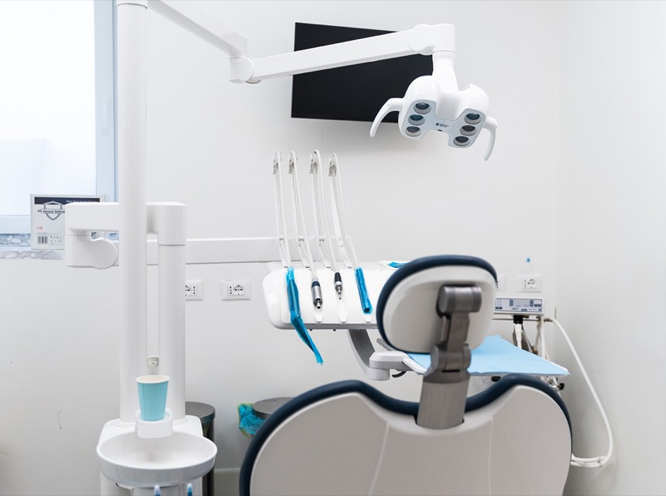

Prevenzione, igiene e prima visita
Controlli periodici, igiene professionale e valutazione iniziale per impostare un percorso chiaro e personalizzato.
Odontoiatria e ortodonzia a Volta Mantovana
Dentisti e chirurghi odontoiatri specializzati nella cura e prevenzione della salute orale, all'interno di un poliambulatorio nato per seguire il benessere della persona in modo completo.
Prevenzione orale
Igiene orale, prima visita, controlli periodici e cure conservative permettono di intervenire prima che piccoli fastidi diventino problemi complessi. L'obiettivo è conservare funzione, estetica e comfort nel tempo.

Odontoiatria avanzata
Un approccio pensato per chiarire il bisogno clinico, scegliere il trattamento corretto e seguire il paziente nel tempo.
Controlli periodici, igiene professionale e valutazione iniziale per impostare un percorso chiaro e personalizzato.
Soluzioni per recuperare funzione e stabilità, con attenzione a tempi clinici, comfort e follow-up.
Apparecchi fissi, mobili o invisibili, faccette e sbiancamento per armonizzare sorriso e benessere orale.
Modalità della visita
Trasparenza informativa, diagnosi e controlli sono parte integrante del trattamento.
Raccolta delle informazioni cliniche, valutazione del bisogno e definizione delle priorità.
Controllo odontoiatrico, eventuale diagnostica e spiegazione delle opzioni più adatte al caso.
Esecuzione della cura, indicazioni personalizzate e monitoraggio con controlli periodici.
FAQ odontoiatria
Risposte rapide per arrivare al primo appuntamento con più chiarezza.
Quando avverti dolore, sanguinamento gengivale, mobilità, sensibilità, difficoltà a masticare o semplicemente desideri impostare un programma di prevenzione.
Sì. L'area odontoiatrica include impianti, apparecchi fissi e mobili, apparecchio invisibile, parodontologia, faccette e sbiancamento.
Dopo la richiesta, lo studio ricontatta il paziente telefonicamente o via email per confermare giorno, orario e motivo della visita.
Equipe
Professionisti con esperienza clinica, aggiornamento continuo e attenzione al percorso personalizzato del paziente.

Founder e Responsabile

Chirurgo Odontoiatrico

Odontoiatra

Odontoiatra

Odontoiatra
Poliambulatorio
Oltre all'odontoiatria, la struttura offre percorsi con specialisti dedicati a salute, postura, nutrizione e qualità di vita.
Percorsi per recupero funzionale, postura, dolore e benessere fisico.
Specialisti per seguire prevenzione, ascolto, alimentazione e salute personale.
Estetica del sorriso
Abbiamo preparato una pagina dedicata alle faccette dentali: quando possono essere valutate, quando non sono la scelta corretta e come iniziare con una valutazione professionale.
Consulto diagnostico
Ogni situazione clinica richiede una valutazione personalizzata. Il team del Poliambulatorio Voltese è a disposizione per ascoltare il tuo bisogno e indicarti il percorso più adatto.
Viale Risorgimento, 57
46049 Volta Mantovana (MN)
Telefono: 0376 838075
Email: info@poliambulatoriovoltese.com
Orari: Lun 09-19 · Mar 10-15 · Mer 09-19 · Ven 15-19 · Sab 09-16